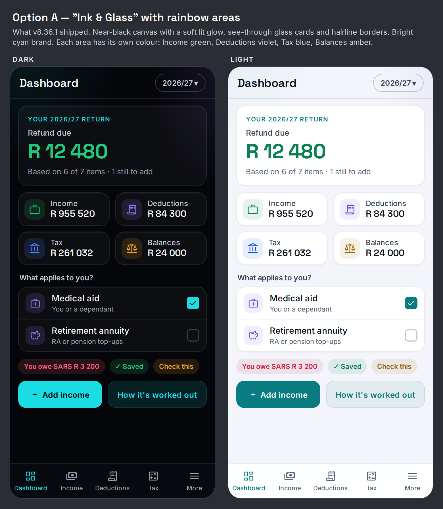
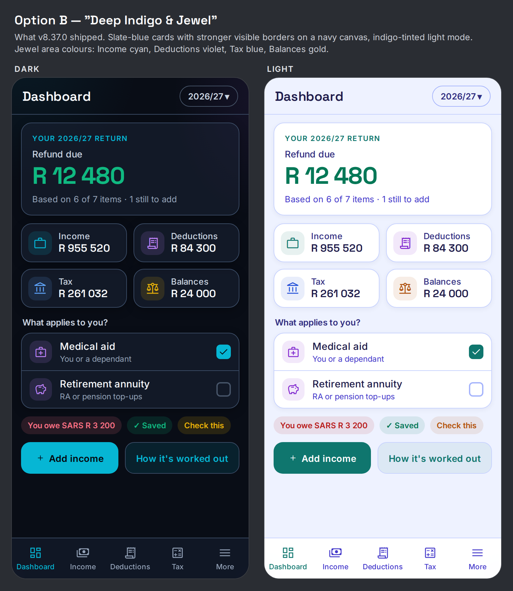
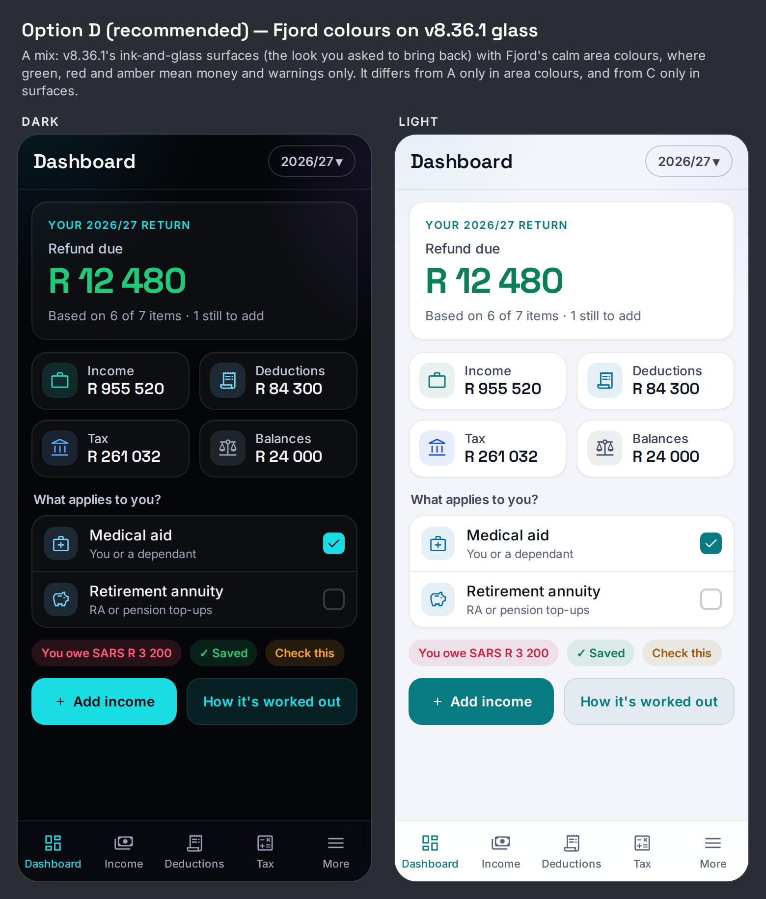
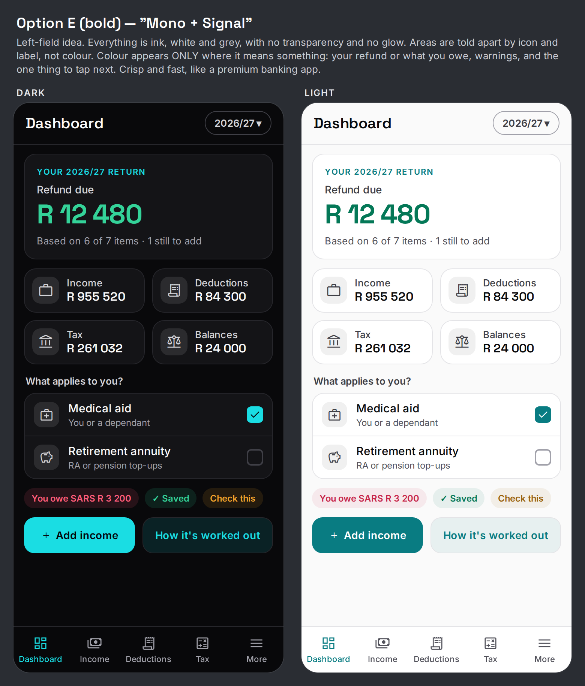

Batch 1 · Personality, colour, surfaces & glow
Step 0: set up the Gem (once)
- Download the master list: Download DECISION-REGISTER.md (R1)
- In a browser: gemini.google.com → Gems → New Gem. Name it InspiredTax Design Partner.
- Paste the Gem instructions (copy below) into Instructions.
- Upload DECISION-REGISTER.md under Knowledge. Save.
No Gem? In a normal chat, attach the file, paste the instructions, then carry on.
Step 1: run Batch 1
Save the 5 images (long-press), open the Gem in the Gemini app, attach them, and send: “Let's do Batch 1.”





At the end, paste Gemini's Ruling Card back to Antigravity.